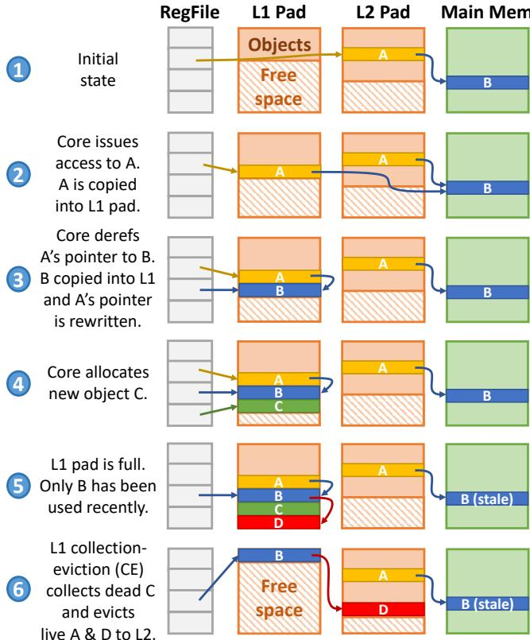
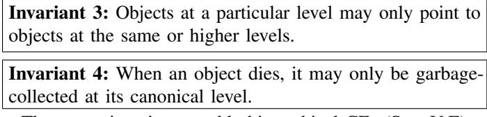
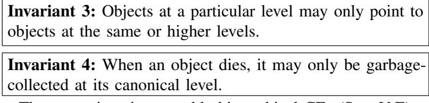

Rethinking the Memory Hierarchy for Modern Languages 通俗讲解¶
0. 整体创新点通俗解读¶
痛点直击 (The "Why")
- 传统的内存层次结构（Cache Hierarchy）是为 C/Fortran 这类语言设计的，它们暴露了扁平的地址空间和原始指针。为了维持这个“所有内存都像一个大数组”的假象，硬件必须用昂贵的全相联/组相联Cache和虚拟内存来掩盖物理内存的层级性。
- 然而，现代主流语言如 Java, Go, Rust 都是内存安全的。程序员看不到真实地址，只能操作抽象的对象指针，这使得垃圾回收（GC）成为可能。但现有的硬件架构与这种语言语义严重不匹配：
- Cache以固定大小的Cache Line为单位移动数据，而程序操作的是变长的对象。这导致Cache内部大量空间浪费（内部碎片），效率低下。
- 每次内存访问都要做一次昂贵的Tag比较（Associative Lookup），无论数据是否在L1。
- 垃圾回收（GC） 是一个巨大的软件开销，它需要遍历整个堆、移动对象、更新指针，这个过程与硬件Cache的管理完全脱节，甚至互相干扰。
通俗比方 (The Analogy) 想象一下图书馆（内存系统）和读者（CPU）。
- 传统Cache方式：就像图书馆把所有书（数据）都打散成固定大小的纸页（Cache Line），然后随机塞进一个个小隔间（Cache Set）。读者要找一本书的某一页，得先查目录（Tag Lookup）找到隔间号，再进去翻找。如果书很薄，一个隔间里大部分都是空白页，非常浪费。
- Hotpads的方式：图书馆管理员（硬件）知道读者只关心完整的“书”（对象），而不是零散的纸页。所以，管理员直接把整本书按需搬进读者手边的小书架（L1 Pad）。读者桌上的索引卡片（指针）会自动更新为小书架上的位置。下次再找这本书，就不用查总目录了，直接去小书架拿。当小书架满了，管理员会快速整理一次：把读完没用的书（Dead Objects）直接扔掉（GC），把暂时不看但以后可能用的书（Live but Cold Objects）搬回大书库（下一级Pad）。这个过程高效且目标明确。
关键一招 (The "How") Hotpads的核心思想是将内存安全语言的“抽象指针”特性从软件延伸到硬件，彻底抛弃“扁平地址空间”这一过时的抽象。它通过以下几招实现了这一点：
- 用“Pad”取代“Cache”：每一级内存（L1, L2...）不再是Cache，而是一个由硬件管理的、类似Scratchpad的Pad。Pad里存放的是完整的、变长的对象，而非固定的Cache Line。这极大地提高了片上存储的利用率。
- 指针重写（Pointer Rewriting） 这是最精妙的一招。当一个指向远方对象的指针被解引用（derefptr）时，硬件会：
- 把那个远方的对象整个搬到L1 Pad里。
- 偷偷地把原来那个指针（无论是寄存器里的还是L1里某个对象的字段）改写成指向L1里的新位置。
- 这样，后续对同一个指针的访问就变成了直接寻址（Direct Access），完全绕过了昂贵的Tag查找。论文数据显示，80% 的L1访问都因此变成了直接访问。
- 统一的收集-驱逐（Collection-Eviction, CE） Hotpads将垃圾回收（GC）和Cache驱逐（Eviction）这两个原本分离的概念合二为一。当一个Pad快满时，硬件会启动一个类似移动式GC的过程：
- 它从根指针（寄存器）出发，标记所有存活的对象。
- 然后，它把最近没被访问过的存活对象驱逐到下一级Pad，把死亡的对象直接回收其空间，并将所有存活对象紧凑排列。
- 这个过程是并发的，对程序性能影响极小，并且大幅降低了软件GC的负担（论文中平均减少了8倍的GC开销）。
 Fig. 4: Example showing Hotpads’s key features.
最终，Hotpads通过这种软硬件协同的设计，构建了一个与现代内存安全语言语义完美契合的内存层次结构，在评估中实现了34% 的性能提升和2.6倍的能效改善。
1. 隐式、基于对象的数据移动¶
痛点直击 (The "Why")
- 传统的 cache hierarchy 是为 C 这类语言设计的，它把内存看作一个巨大的、由固定大小 cache line（比如 64 字节）组成的线性数组。这个模型和现代 memory-safe languages（如 Java, Go）的编程模型存在根本性的错配。
- 在 Java 里，程序员操作的是 object，而不是原始的字节数组。一个对象可能很小（比如只有 16 字节），也可能很大。当 CPU 访问一个对象的字段时，传统缓存会把包含该字段的整个 cache line 都拉进来。
- 这导致了两个“很难受”的问题：
- 空间浪费严重：如果一个 cache line 里只有一小部分是当前需要的对象数据，其余部分都是无关甚至无效的数据（poor spatial locality），宝贵的片上缓存空间就被白白占用了。
- 无效数据移动：垃圾回收（GC）后，很多对象被回收，但缓存并不知道，依然会搬运那些已经死亡的对象所在的 cache line，造成大量无用的内存带宽消耗。
通俗比方 (The Analogy)
- 想象你要从一个巨大的仓库（主存）里拿东西。传统缓存就像一个笨拙的搬运工，他只会按固定大小的箱子（cache line）来搬。即使你只需要箱子里的一支笔，他也得把整个箱子扛到你的工作台（L1 cache）上。你的工作台很快就被这些半空的箱子堆满了，找东西反而更慢。
- Hotpads 的做法则像一个聪明的智能助理。他知道你真正关心的是一个个完整的“物品”（object）。当你需要某个物品时，他会精确地只把这个物品本身（无论大小）放到你的工作台上，并且会把物品在仓库里的原始位置（canonical address）记下来。你的工作台因此变得井井有条，效率极高。
关键一招 (The "How")
- 作者并没有沿用“地址->缓存行”这套旧逻辑，而是巧妙地将整个内存层次结构的管理单元从 cache line 替换成了 object。
- 具体来说，他们做了以下扭转：
- 硬件接管布局：程序无法再看到真实的物理地址，只能看到抽象的 pointer。这给了硬件完全的自由去决定对象在内存层次中的物理位置。
- 按需精准搬运：当核心通过一个指针访问一个不在 L1 pad 中的对象时，硬件会隐式地触发一次数据移动。这次移动不是搬运一个固定的 cache line，而是精确地复制整个目标对象到 L1 pad 的空闲区域。
- 无缝重写指针：对象被复制到 L1 后，硬件会自动将触发这次访问的指针（无论是寄存器里的还是另一个对象里的）重写为指向 L1 中的新副本。这样，后续的所有访问都变成了对 L1 的直接、高效访问，完全绕过了耗时的 associative lookup（关联查找）。
- 这个设计的核心在于，通过 隐式、基于对象的数据移动 和 指针重写 的组合拳，将数据放置的粒度与程序的语义（对象）完美对齐，从而一举解决了传统缓存因粒度不匹配而导致的空间和带宽浪费问题。 Fig. 4: Example showing Hotpads’s key features.
2. 指针重写以避免关联查找¶
痛点直击 (The "Why")
- 传统的 cache 之所以慢且耗电，核心在于 associative lookup（关联查找）。每次 CPU 访问内存，硬件都得在 cache 的 tag array 里进行一次“大海捞针”式的搜索，看这个地址的数据是不是在 cache 里。这个过程需要并行比较多个 cache line 的 tag，非常 昂贵。
- 对于 memory-safe languages（如 Java），程序中的指针是抽象的，程序员不能直接操作地址。这意味着，一旦一个对象被加载到 L1 cache，程序后续对它的访问会非常频繁。但传统 cache 对每一次访问都要做一次完整的 associative lookup，做了大量 重复且无谓的功。
通俗比方 (The Analogy)
- 想象你在一个巨大的图书馆（主存）里找书。传统 cache 就像一个智能书架（L1 cache），但它有个毛病：每次你想拿一本已经在书架上的书，图书管理员（硬件）都得重新查一遍整个目录（tag array），确认这本书确实在这个书架上，然后才递给你。
- Hotpads 的做法则聪明得多。当你第一次借到一本书（对象）并把它放到你的个人书桌（L1 pad）上时，图书管理员会立刻把这本书在你书桌上的 确切位置 直接写在你手里的借书卡（指针）上。下次你再想看这本书，直接低头看你书桌的那个位置就行了，根本不用再麻烦管理员查目录。只有当你借的是一本新书时，才需要管理员去大图书馆里找一趟。
Fig. 4: Example showing Hotpads’s key features.
关键一招 (The "How")
- 作者并没有沿用“地址不变，数据移动”的传统 cache 思维，而是利用了 memory-safe language 的特性，大胆地 让硬件直接修改指针本身。
- 具体来说，当一个 dereference 操作（通过
derefptr指令明确指示）发现目标对象不在 L1 pad 时，硬件会：- 将该对象从下一级存储（L2 pad 或主存）复制到 L1 pad 的空闲区域。
- 最关键的一步：硬件会立即 重写 发起这次访问的那个指针（无论它是在 CPU 寄存器里，还是在 L1 pad 中另一个对象的字段里），将其值更新为该对象在 L1 pad 中的 新地址。
- 这个 pointer rewriting（指针重写） 操作，本质上是一次 一次性投资。它把后续无数次的、昂贵的 associative lookup，转换成了最廉价的 direct access（直接寻址）。论文数据显示，这一招让 80% 的 L1 访问 变成了直接访问，从而使得 L1 pad 的能效比 L1 cache 高出 2.3倍。
3. 层次化垃圾回收与驱逐统一（Collection-Eviction, CE）¶
痛点直击 (The "Why")
- 传统的 cache hierarchy 和 garbage collection (GC) 是两套完全割裂的系统，各自为政，造成了巨大的效率浪费。
- Cache 只关心数据的 temporal/spatial locality（访问频率和空间连续性），它不知道哪些数据是“活”的（live），哪些是“死”的（dead）。即使一个对象已经被程序抛弃（dead），只要它最近被访问过，cache 就会把它留在宝贵的片上存储里，并在驱逐时把它写回内存，白白浪费 带宽 和 能量。
- Garbage Collector 只关心对象的 liveness（存活性），它不知道数据的 locality。它可能会把一个刚被频繁访问、还热乎着的“活”对象，因为要整理堆内存而移动或处理，打断了 cache 的局部性，导致后续访问产生 cache miss。
- 简单说，cache 在帮 GC 养“僵尸”（dead objects），而 GC 在给 cache “捣乱”（破坏 locality）。两者目标不一致，互相拖后腿。
通俗比方 (The Analogy)
- 想象你有一个三层的书房：L1 是你的桌面（最快但最小），L2 是你手边的书架（中等速度和大小），L3/主存 是你家里的大书柜（最慢但最大）。
- 传统做法是：
- 有个 图书管理员 (Cache Controller)，他只看你最近翻了哪些书，就把这些书放在桌面或书架上。但他不知道你是不是已经读完了、再也不需要了（dead）。
- 同时，还有个 清洁工 (Garbage Collector)，他每隔一段时间就来大扫除，他会检查所有书，把不需要的废纸（dead objects）扔掉。但他不管这本书你是不是正在用，可能会把你正在读的书从桌面拿走去检查，非常打扰。
- Hotpads 的 CE 过程 相当于把图书管理员和清洁工合二为一，变成了一个 智能管家。当他发现你的桌面快放不下新书时，他会做一次 统一整理 (CE)：
- 他先快速扫一眼，把所有 确定没用的草稿纸 (dead objects) 直接揉成团扔进垃圾桶（回收空间，无需写回）。
- 然后，他再看看剩下的书中，哪些是你 最近没怎么碰的旧参考书 (live but non-recently accessed)，就把它们从桌面挪到手边的书架上（驱逐到下一级）。
- 最后，他把 你正在用的核心资料 (hot live objects) 整齐地码在桌面中央，方便你随时取用。
- 这样一次行动，既完成了清洁（GC），又优化了布局（Cache Eviction），一举两得。
关键一招 (The "How")
- 作者并没有分别实现 GC 和 Cache Eviction，而是巧妙地将两者融合在一个名为 Collection-Eviction (CE) 的硬件过程中。
- 当任何一个 pad（如 L1）的空闲空间低于阈值时，就会触发 CE。这个过程的核心逻辑转换在于：利用对象的存活信息来指导驱逐决策，同时利用访问的时效性来优化垃圾回收的范围。
- 具体来说，CE 过程执行以下几步：
- 找根 (Find Roots)：硬件直接从 CPU 寄存器（以及下级 pad）获取指向当前 pad 中对象的指针作为根。这比软件 GC 遍历整个调用栈快得多，开销极小。
- 标记存活 (Mark Live)：从根出发，遍历所有可达对象，标记为 live。未被标记的就是 dead。
- 统一处理 (Compact or Evict)：这是最关键的一步。对于每个 live 对象：
- 如果它 最近被频繁访问（通过 recency bits 判断），就把它 compact（紧凑移动）到当前 pad 的已分配区域开头，保证空间连续。
- 如果它 是 live 但最近没怎么用，就把它 evict（驱逐）到下一级 pad。因为它是 live 的，所以需要为其在下一级分配空间并复制过去。
- 更新指针 (Update Pointers)：最后，一次性扫描并更新所有指向被移动或被驱逐对象的指针，保证程序正确性。
- 通过这种方式，dead objects 被就地回收，不会产生任何向下的写流量；只有真正有价值的、但暂时不热的 live objects 才会被驱逐。这极大地减少了内存带宽消耗和能量开销。论文数据显示，CE 过程将 GC 开销平均降低了 8 倍，并且使 主存动态能耗降低了 4.1 倍。
 Fig. 17: Allocated, evicted, and collected bytes per pad level.
Fig. 17: Allocated, evicted, and collected bytes per pad level.
4. 层级内对象分配¶
痛点直击 (The "Why")
- 传统的内存系统，无论你用的是 C 还是 Java，都建立在一个 flat address space（扁平地址空间） 的抽象之上。这个抽象对程序员友好，但对硬件很不友好。
- 当你在 Java 里
new一个对象时，runtime 必须先在 主存 (main memory) 中为它分配一块空间。即使这个对象只活几纳秒，马上就要被 GC 掉，这个昂贵的主存分配和后续可能的写回操作也必不可少。 - 这导致了两个核心痛点：
- 巨大的能量浪费：为一个短命对象访问一次主存，其能耗远高于在片上缓存中操作。
- 不必要的延迟：新对象的首次访问必然 miss，需要从下层内存加载，拖慢了程序。
通俗比方 (The Analogy)
- 想象你要写个便签。传统做法是：你必须先去仓库（主存）领一张全新的、有唯一编号的纸（分配地址），写完后如果不用了，还得通知仓库管理员回收（GC）。整个过程繁琐且低效。
- Hotpads 的“层级内对象分配” 就像你的办公桌（L1 pad）上本身就有一大块空白便签纸（free space）。你想写什么，直接在上面写就行了（分配），完全不需要跟仓库打交道。只有当你这张便签变得很重要、需要长期保存时，才会有人（CE 过程）把它誊抄到你的文件柜（L2 pad）甚至仓库（主存）里。绝大多数随手写的草稿，就在你的桌面上诞生并销毁了，对仓库零打扰。
关键一招 (The "How")
- 作者彻底抛弃了“所有对象必须有主存后备存储”这一传统观念。他们利用了 memory-safe language 的特性——程序员看不到真实地址，只能通过抽象指针操作对象。
- 具体来说，alloc 指令的行为被重新定义：
- 对于小对象，硬件直接在 L1 pad 的 free space 里划出一块区域，初始化对象头，然后返回一个指向 L1 地址的指针。
- 因为这个对象从一开始就没有主存地址，所以它的整个生命周期都可以在片上完成。只有当 L1 pad 满了，触发 collection-eviction (CE) 时，如果这个对象还活着，才会被“提升”到 L2 pad，并在那里获得一个“规范地址 (canonical address)”。
- 这一招的精妙之处在于，它将 allocation 和 promotion 解耦了。分配是即时的、廉价的；而是否需要持久化（分配主存地址）则推迟到 CE 时根据对象的“存活价值”来决定。这完美契合了 generational hypothesis（分代假说） ——大多数对象死得很快，根本不值得为它们付出主存访问的代价。
Fig. 4: Example showing Hotpads’s key features.
5. 规范层级与不变式¶
痛点直击 (The "Why")
- 传统的缓存层次结构（Cache Hierarchy）和垃圾回收（GC）是两套完全独立的系统，它们各自为政，导致了巨大的效率浪费。
- 缓存只关心数据的访问局部性（locality），它把内存切成固定大小的 cache line 来搬运，不管里面的数据是不是一个完整的、有意义的 object。这导致了严重的内部碎片和带宽浪费。
- 垃圾回收只关心对象的生命周期（liveness），它需要遍历整个堆来找出哪些 object 是活的、哪些是死的。这个过程非常昂贵，尤其是在 Stop-The-World 的情况下，会带来巨大的性能停顿。
- 最关键的冲突在于：缓存不知道对象边界，GC不知道缓存状态。一个刚被分配的短命对象，可能因为缓存竞争被立刻踢到主存，而GC稍后又得把它从主存读回来检查一遍，最后发现它是死的再写回去。这个过程充满了无谓的数据移动。
通俗比方 (The Analogy)
- 想象一个大型图书馆（主存）和几个不同级别的阅览室（L1/L2/L3 pads）。传统做法是，图书管理员（缓存系统）只按书架（cache line）来搬运书籍，不管一本书是否完整。同时，还有一个独立的图书审计员（GC）定期来检查哪些书没人看（dead objects），要把它们清理掉。
- Hotpads的做法完全不同：它把整个图书馆的管理权统一了。现在，每一本书（object）都有一个唯一的“户籍所在地”（canonical level）。新书诞生在最小的阅览室（L1），如果这个阅览室满了，管理员会进行一次“整理”（Collection-Eviction, CE）。在这次整理中，他不仅会把没人看的书（dead objects）直接销毁，还会把那些虽然有人看但最近没被翻阅的书（non-recently accessed live objects）连同它的户籍一起，迁移到下一级更大的阅览室（L2）去。
- 这个“户籍”制度就是核心。它保证了一个铁律：任何一本书里提到的参考文献（指针），其户籍所在地不能比这本书本身更低级。这就避免了混乱，比如L2的书不会傻乎乎地指向一个可能随时被L1清理掉的L1副本。
关键一招 (The "How")
- 作者没有去分别优化缓存和GC，而是通过引入 canonical level 和一组严格的 invariants，将两者合二为一。
- 最关键的逻辑转换在于，将对象的“家”（canonical level）从固定的主存，变成了一个动态提升的概念。对象的家会随着它在内存层次中的“资历”增长而向更高级别迁移。
- 具体来说，系统强制执行了两个核心不变式：
- Invariant 1: 对象在其 canonical level 上必须存在一份真实副本。这为所有指针重写提供了一个稳定的锚点。
- Invariant 2 & 3: 任何对象只能持有指向相同或更高层级（same or higher canonical level）对象的指针。这从根本上消除了跨层级指针的复杂性，使得每个层级的 Collection-Eviction (CE) 过程可以独立、并发地执行，而无需担心破坏其他层级的数据一致性。
- 正是这个“户籍+单向指针”的设计，让硬件可以在L1层级大胆地进行指针重写（将指针直接指向L1内的副本），因为即使L1副本被后续的CE移走，系统也能通过对象头部存储的 canonical pointer 轻松找回它的“老家”，从而保证了正确性。
 
